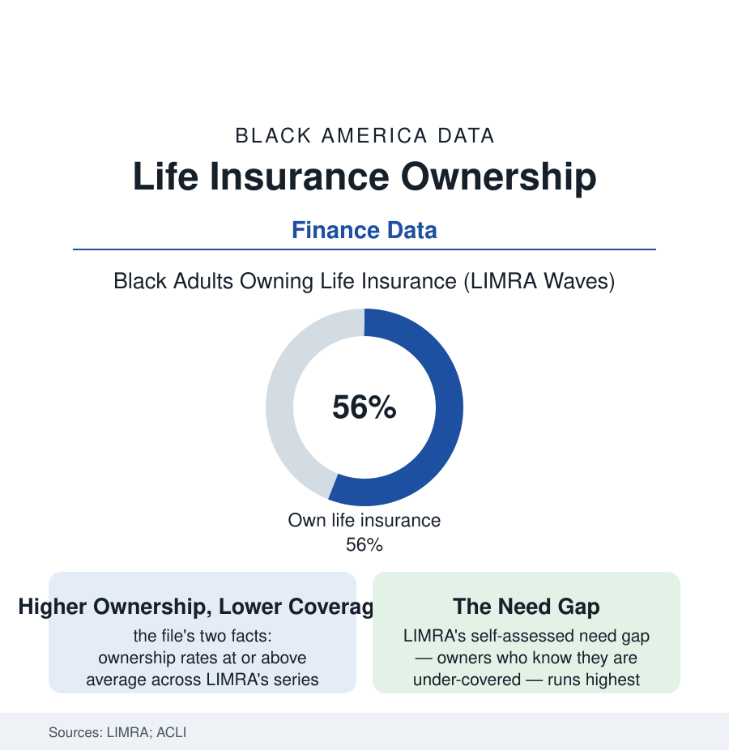

Black Census
Life Insurance: The One Policy Black Households Buy at Higher Rates
Black adults own life insurance at rates equal to or above the national average — a century-old protection culture the industry data record, with a coverage-amount gap inside it.

The finance files of this census mostly record deficits. Life insurance records something else: a protection culture a century deep, in which Black adults own policies at rates equal to or above the national average in LIMRA's consumer barometers — roughly fifty-six percent of Black adults in recent waves — even as the coverage amounts run well below. The pattern is the industrial-insurance era's direct inheritance (the premium man at the door of the insurance-companies file, replaced by the workplace enrollment form), and its modern data describe a population that buys the product, believes in the product, and is under-covered by its own stated standards. This article reads the policy file.
The Ownership Structure: What the Policies Are
The ACLI and SCF data decompose the portfolio: the group coverage of the workplace (the employer plan's one-to-two-times-salary default — the employed population's floor, lapsing with the job in the portability data) and the individual market split between term (the young family's instrument — the online term era's price collapse in the rate data) and permanent insurance (the whole-life tradition of the Black market — the industrial policy's descendant, sold for the burial and the legacy in the agent force's own framing, its cash-value economics the consumer literature's longest-running argument). The coverage medians price the file's tension: Black policyholders' median face amounts running at roughly half to two-thirds the white median in the survey analyses — the burial-plus-a-cushion scale against the income-replacement standard the planners' rule (ten to twelve times income) prescribes — with the self-assessed need gap in LIMRA's data (the owners who say they need more, the highest share of any group in the recent barometers) showing the market knows its own arithmetic. The lapse data add the fragility: policies lapsing for nonpayment at rates the income-volatility file predicts, the protection evaporating in the household's worst year — the product's cruelest correlation, priced in the persistency tables.
The Distribution: Agents, Trust, and the Kitchen Table
The industry's Black history (the companies file) left a distribution culture the modern data still register: the agent relationship as the purchase channel's center (Black consumers reporting agent-mediated purchase at above-average rates in the LIMRA channel data — the debit agent's successor being the community agent, the church-and-fraternity-network producer, the MDRT tables' Black membership a counted tier), the workplace enrollment's defaults doing quiet mass work, and the direct-online channel's demographics running youngest and thinnest in the Black consumer data (the digital divide of the broadband file at the insurance shelf). The trust research maps the ambivalence precisely: high product belief (the barometer's attitudinal items — Black respondents rating life insurance's importance at the top of the groups) against institutional wariness (the application process's medical-exam and MIB-record frictions, the contestable-claim stories of the community record, the historical memory of the race-rated premium tables the industry paid settlements over within living memory — the class actions of the 2000s closing the books on policies priced by race into the 1970s in the litigation record). The underwriting modernization is the live front: the accelerated-underwriting and algorithmic era's fairness audits (the state regulators' model-risk rules — Colorado's first-in-nation framework in the record) as the pricing file's new form.
The Function: What the Policy Does in the Data
The outcome literature gives the product its due in the household data: the death benefit as the Black family's most reliable intergenerational transfer at the median (the SCF's inheritance data showing life-insurance proceeds among the most common forms of received wealth in Black households — the policy as the poor family's estate plan, its probate-avoiding, income-tax-free mechanics the planners' file notes), the final-expense function performed at scale (the burial the community's non-negotiable — the funeral file's economics underwritten by this one since the burial societies), the widowhood poverty data (the insured decedent's household against the uninsured in the PSID's panels — the benefit's cushion measurable in the survivor's first-year income), and the business file's uses (the buy-sell and key-person policies of the business section's succession plans, the collateral assignment behind the SBA loan). The uninsured remainder completes the file: the two-in-five Black adults without coverage concentrated in the young, the unbanked file's population, and the gig workforce — the group-coverage default's exclusions made demographic — their final-expense risk socialized onto the kinship network of the caregiving file, the GoFundMe funeral a line item in the crowdfunding platforms' category data.
Reading the Insurance Data
The highest ownership, the thinnest coverage, the clearest self-knowledge of the gap: the life-insurance file is the finance section's portrait of a population doing the protective thing at the scale its income allows — the policy bought, faithfully, for a hundred years, in amounts the arithmetic keeps outrunning. The industry's own barometer says the customers know. The coverage medians say the rest.
More in Black Census
The Black Population of the United States: Size, Definitions, and Distribution
The Black population of the United States totals 52.8 million — 15.4 percent of the nation. How the Census Bureau defines and counts the population, and where it lives.
Black Median Household Income in the United States
Black median household income stands at $56,490 in the Census Bureau's annual income report — how the figure is measured, how it compares, and what drives it.
The Black Poverty Rate: Levels, Children, and the Long Trend
The official Black poverty rate is 17.1 percent — against 11.1 percent nationally and 7.7 percent for non-Hispanic White Americans. How poverty is measured and what the data show.
Source: LIMRA Insurance Barometer and consumer studies; ACLI Life Insurers Fact Book; Federal Reserve Survey of Consumer Finances; Society of Actuaries research.